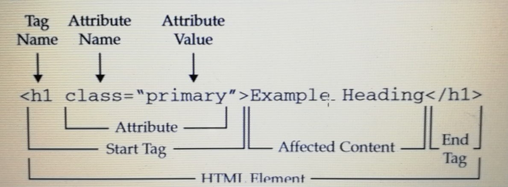

HTML
HTML også kendt som Hypertext Markup Language.
HTML er grundstenene for en website, det strukturerer hjemmesidens indhold.
HTML består af forskellige tags som fremføre arbejdet for hvad der skal ske med teksten, det bruges til at indsætte både links og billeder.
Man starter altid med et starttag < > og afslutter så tagget med et lukketag </>.
Tags kan kun ses på selve html dokumentet, og ikke på selve websiden.
Når man arbejder i et html dokument er det vigtigt at tilknytte kommentarer <! -- -->,
det gør det nemmere for andre at forstå tanken bag de forskellige valg man har taget.

Editor program
Er det program hvor html, Css og javascript skrives i.
Der findes mange forskellige editor programmer man kan benytte, Notepade++, Edge Code, Brackets osv.
Nogle editorprogrammer giver mulighed for at se resultatet i browseren Chrome
via. live-view samtidig med at du arbejder med det, WYSIWYG/What You See Is What You Get. Det
Grundlæggende HTML
Opbygning
Et html dokument er opbygget af flere elementer. Til at starte med gør man det klart at der er tale om et html dokument.
Efter det er gjort indsættes html tagget som indikere at det følgende tekst er html kode.
Når det er gjort kommer head-tagget, det er her title, meta-tags og link til stylesheet indsættes.
Efter det body, som er det sted hvor alt indholdet til sitet er, alt det der kan ses er.
<!DOCTYPE HTML> indikere at det er et html dokument.
<html> fortæller at den kommende tekst er html kode, wrapper omkring det resterende. Her indsættes attributten med sprog.
<Head> indeholder title, meta-tags og link til stylesheet.
<Body> her er indholdet af siden, det man ser på selve sitet.

Links
Links på et website er et godt hjælpemiddel til at navigere rundt på sitet eller give mulighed til at springe til et andet website. Den tekst som står imellem start-tagget og slut-tagget er det der på sitet vil forekomme klikbare.
<a href:www.facebook.com>Facebook</a>
Billeder:
Billeder angives med et img-tag, det fortæller browseren at det der arbejdes med er et billede. I img-tagget bruges src attributten, hvor det valgte billede findes frem. Når man indsætter et img-tag i html dokumentet er det vigtigt at huske alt=””, da den del bruges hvis billedet af en eller anden grund ikke kan blive vist på sitet, i denne situation vil det nemlig være alt: billede teksten der kommer frem.
Man skal sørge for at filen på billedet ikke er for stor, da det vil resultere i at sitet loader langsomt.
<img scr="JPG" alt="billede tekst">